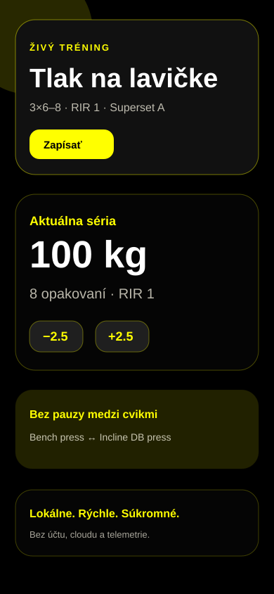
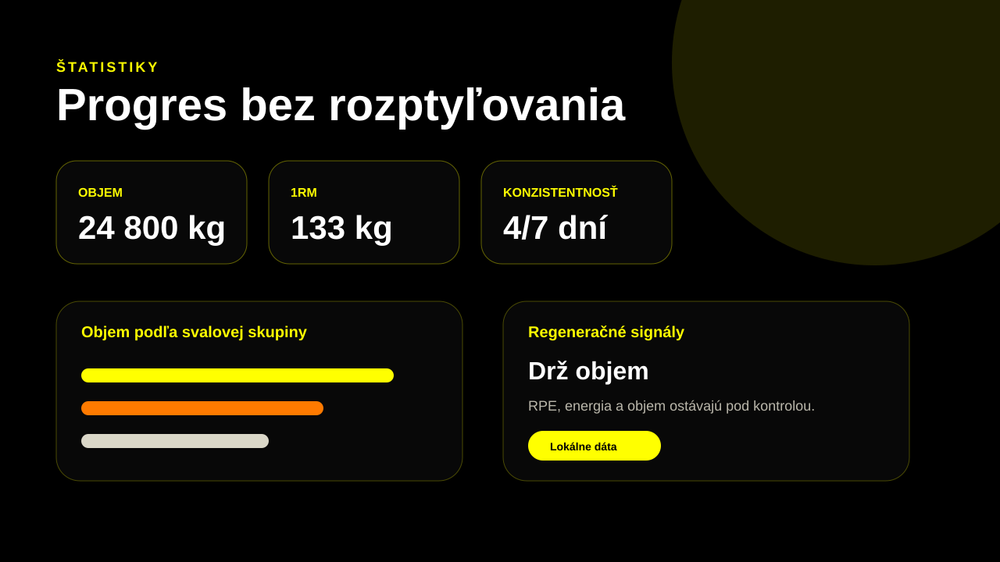

Exportuje Plan Pack
Plán, cviky a prezentačné hinty idú do prenosného `.stfplan` JSON súboru.
StingFit je rýchla tréningová aplikácia pre coachov, trainee a solo lifterov. Tréner pošle `.stfplan`, trainee ho importuje, trénuje offline a môže poslať späť `.stfrecap` bez účtu alebo cloudu.
No login No cloud sync No telemetry No subscription
Sharing je explicitný. Dáta opustia zariadenie iba vtedy, keď používateľ exportuje súbor. Žiadny background upload, žiadne zariadenia ID, žiadna analytika.
Plán, cviky a prezentačné hinty idú do prenosného `.stfplan` JSON súboru.
Plan Pack sa najprv zobrazí ako preview. Commit je vždy vedomá akcia trainee.
`.stfrecap` ukáže coachovi, čo bolo odtrénované, bez možnosti meniť dáta trainee.
Landing používa existujúce PWA screenshot assets a jeden inline Coach handoff mockup, aby nepridávala nové raster súbory ani dependencies.

Coach handoff mockup
Coach exportuje `.stfplan`, trainee importuje preview a po tréningu exportuje `.stfrecap` späť.

Nie. StingFit V2 nemá login, cloud účet, subscription ani paywall.
Iba keď používateľ vedome exportuje JSON, `.stfplan` alebo `.stfrecap` súbor.
Áno. Coach Mode je perspektíva v tej istej appke, nie samostatný SaaS produkt.
No verified desktop installers are published yet. Tauri build zostáva blokovaný, takže `.msi` a `.dmg` odkazy sú zámerne pending.